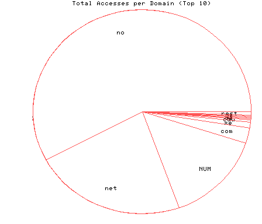
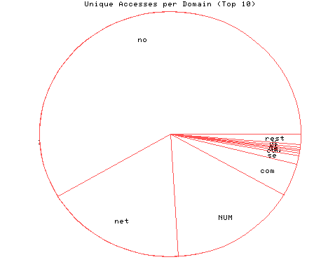

HTTP Server Domain Statistics
Covers: 02/05/96 to 02/12/96 (8 days).
All dates are in local time.
1 level, sorted by number of requests, 19 unique domains.
6351 : 553 : 02/12/96 : Norway (.no) 2486 : 166 : 02/12/96 : Network (.net) 1589 : 149 : 02/12/96 : (numerical domains) 267 : 41 : 02/12/96 : US Commercial (.com) 104 : 10 : 02/11/96 : Sweden (.se) 43 : 4 : 02/09/96 : US Educational (.edu) 21 : 2 : 02/08/96 : Germany (.de) 20 : 2 : 02/12/96 : Netherlands (.nl) 18 : 3 : 02/07/96 : United Kingdom (.uk) 15 : 3 : 02/09/96 : Denmark (.dk) 12 : 1 : 02/09/96 : Austria (.at) 10 : 2 : 02/09/96 : Japan (.jp) 9 : 3 : 02/11/96 : Canada (.ca) 6 : 1 : 02/11/96 : Mexico (.mx) 5 : 1 : 02/07/96 : Finland (.fi) 3 : 1 : 02/09/96 : Brazil (.br) 3 : 1 : 02/07/96 : Belgium (.be) 3 : 1 : 02/05/96 : Iceland (.is) 1 : 1 : 02/05/96 : New Zealand (.nz)

Statistics generated at Mon Feb 12 05:08:50 MET 1996, (C) Schibsted Nett AS, 1995.